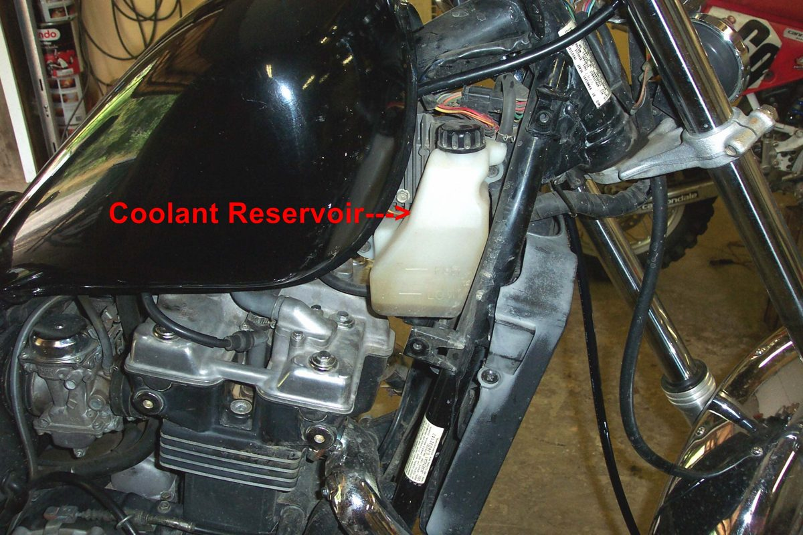
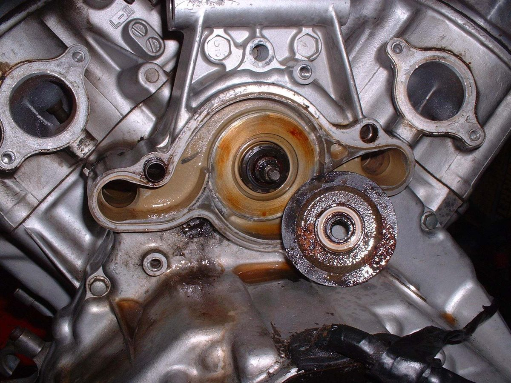
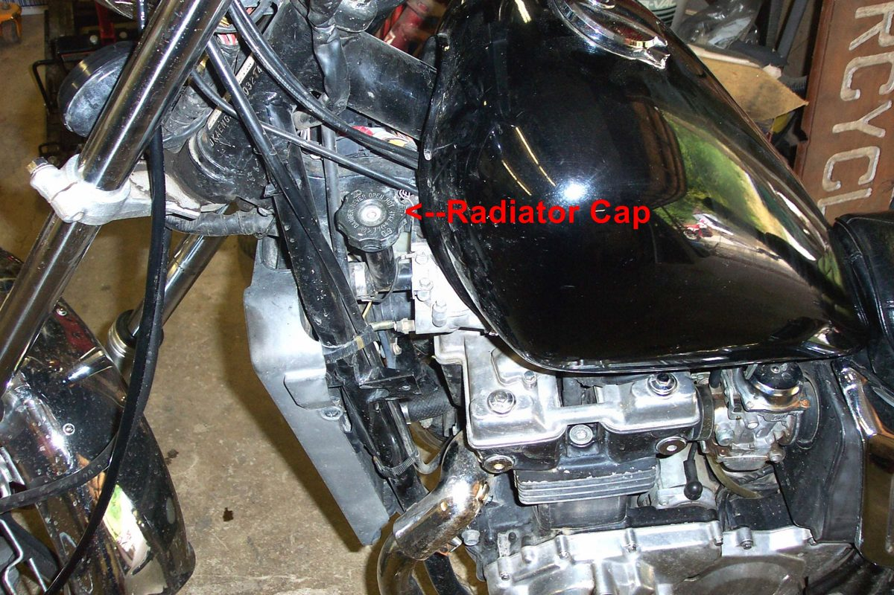

A temperature gauge or light reads a sensor in the engine. On liquid-cooled bikes it sits in the coolant. On some air-cooled fuel-injected bikes, including the K-Light 125, it is a cylinder head temperature sensor used by the ECU (its fault codes still call it "coolant temperature"). A high reading usually means the engine really is hot. Sometimes it is the sensor, the wiring or the gauge that is wrong. You find out by checking whether the engine shows real signs of heat.
Is it safe to ride?
Stop now and switch off until you know the engine is not overheating. Treat the warning as real until proven otherwise.
Quick checks first
- Stop, switch off, let it cool.
- Real heat signs: boiling or steam, hot smell, pinking, power loss, fan running hard?
- Liquid-cooled: coolant level once cold.
- Is the engine warning light also on?
- If the gauge rises only when idling at a stop, check the fan first. Coolant level usually reads normal in that case.
Diagnose it step by step
1Are there real signs of overheating (steam, boiling in the reserve tank, hot smell, pinking, power loss)?
- Yes, liquid-cooled: go to Liquid-cooled engine overheats.
- Yes, air-cooled: go to Air-cooled engine overheats.
- No: go to step 2.
2Did the gauge jump to high suddenly, or read high on a cold engine right after key-on?
- Yes: likely a sensor or wiring fault. Go to step 4.
- No, it rose slowly in traffic: go to step 3.
3Liquid-cooled: is the coolant correct and does the fan switch on? Check with Check and top up coolant and Test the radiator fan and its switch.
- A fault is found: fix it.
- Both fine: ask for Check the thermostat.
- Air-cooled: check fins, oil and mixture with Check air cooling (fins, airflow, mixture).
4Fuel-injected: read codes with Read engine fault codes (fuel injection). Is there a temperature sensor code? (K-Light 125: P0118 high, P0117 low.)
- Yes: check the sensor and its connector with Check the engine sensors (TPS, MAP, temperature). Compare resistance with the manual when cold.
- No code: go to step 5.
5Is the sensor connector loose, corroded or the wire damaged near the hot engine?
- Yes: repair with Find a wiring fault.
- No: the gauge or instrument may be faulty. A workshop can check it by fitting a known-good sensor.
What happens if you ignore a real warning: the engine can warp its head, blow a head gasket or seize.
Causes, most likely first
| Cause | How to confirm | Fix |
|---|---|---|
| Engine really overheating | Steam, smell, pinking | Check and top up coolant |
| Fan not running | Silent in traffic | Test the radiator fan and its switch |
| Sensor fault | Fault code, wrong resistance | Check the engine sensors (TPS, MAP, temperature) |
| Wiring or connector fault | Sudden jump, damage | Find a wiring fault |
| Thermostat stuck | Hot engine, cool radiator | Check the thermostat |
Reference values (K-Light 125)
| Item | Value | PDF page |
|---|---|---|
| Head temperature sensor, 25 °C | 1.9 to 2.1 kΩ | 261 |
| Head temperature sensor, 100 °C | 0.179 to 0.187 kΩ | 262 |
| Fault codes, temperature sensor high / low | P0118 / P0117 | 269 |